I GRAFI
POCA STORIA
Il concetto dei grafi nasce nel 700 da Eulero, matematico che per risolvere un problema usò i grafi, il problema: la citta di Konigsberg aveva 7 ponti, voleva farli visitare a un amico senza passare piu di una volta su un singolo ponte 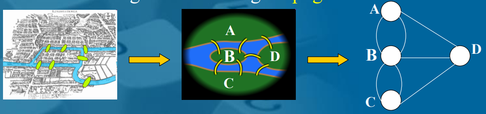
Definizione di grafo(non orientato)
Un grafo G=(V,E)
- V= vertici o nodi
- E= insieme di coppie non ordinate di vertici detti archi
Grafo di Eulero
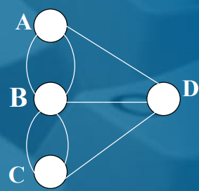 questo si dice multigrafo quando ha archi paralleli (collegamenti) il grafo di Eulero possiamo vedere che ha 4 vertici e 7 coppie ovvero i collegamenti
3 ESEMPI DI GRAFI PARTICOLARI
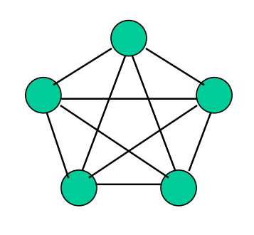 grafo completo
- c’è un arco per ogni coppia di vertici, tutti i nodi sono collegati tra loro 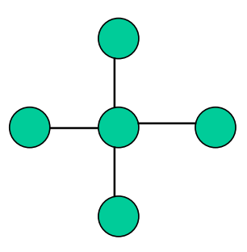 a stella centro e le punte formando una stella
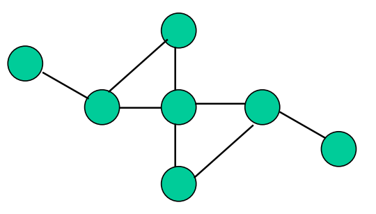 grafo a caso bho un classico grafo non direzionato
Grafo che modella scenario sulla scacchiera dei possibili cammini di un rook
♜♜♜♟️♟️ 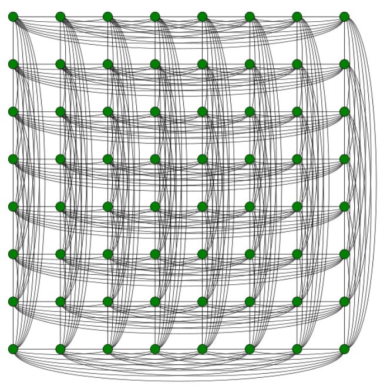 qui si potrebbe usare un grafo orientato se ipoteticamente la torre dovesse fare solo una direzione senza tornare indietro
GRAFO ORIENTATO
esempio di grafo orientato con frecce Un grafo diretto
- 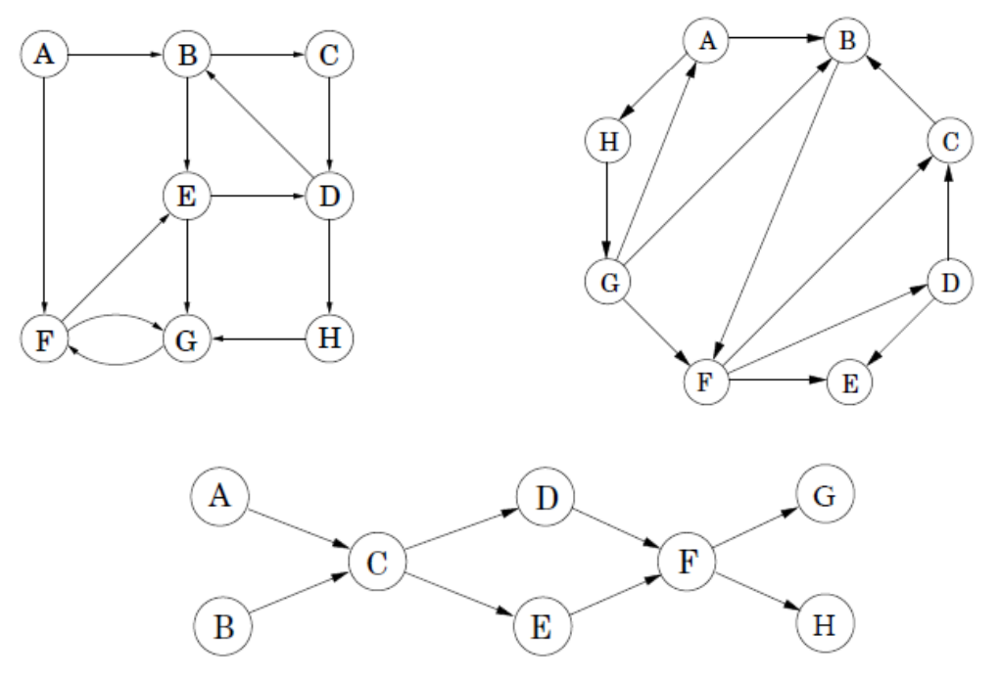
esempio di grafo sociale dove uno conosce il nome e cognome di un altro
c’è un arco se conosce il nome e cognome di 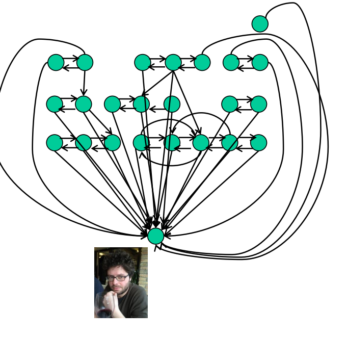
TERMINOLOGIA DEI GRAFI
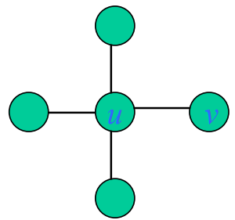 grafo non diretto:
- viene usato per indicare la cardinalità dei vertici
- viene usato per il numero di archi
- e sono adiacenti o vicini
- l’arco è incidente a e a
- il grado() di è il numero di archi che riguardano
- grado di =max tra tutti i vertici di tutti i gradi di
- deg =
grafo diretto: 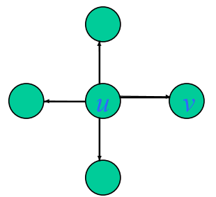
nell’arco sarà uscente da e entrante in il grado uscente () di è il numero di archi uscenti da il grado entrante () di è il numero di archi entranti da
- grado entrante o uscente di =max tra tutti i oppure di
- deg =
- deg =
Relazione fra grado dei nodi e numero di archi
in un grafo non orientato: 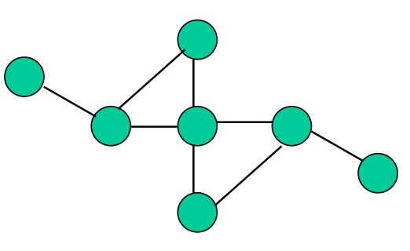 non è orientato, facciamo la somma di tutti i gradi di tutti i vertici otterremmo volte il numero di archi facendo una sommatoria
il numero di nodi di un grado dispari è sempre pari in un grafo orientato: 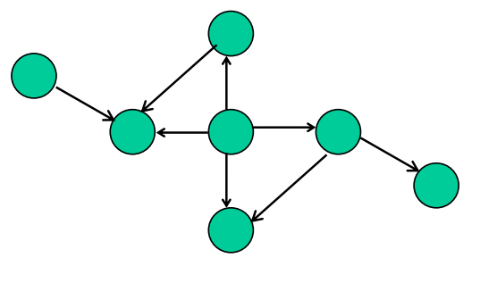
Altre terminologie
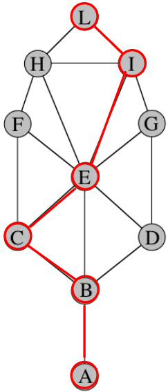
- il cammino indica una sequenza di nodi connessi tra loro con archi
- lunghezza di un cammino: il numero di archi del cammino
- distanza tra due vertici indica il cammino piu corto per arrivare da un vertice a un altro
- distanza tra L e A e 4
- G è connesso se esiste un cammino per ogni coppia di vertici
- ciclo: cammino chiuso che parte da un vertice e finisce nel vertice stesso
- il diametro indica la lunghezza massima dell’insieme di tutti i cammini minimi di tutti i nodi
- se non è connesso la distanza e infinito
ESEMPI
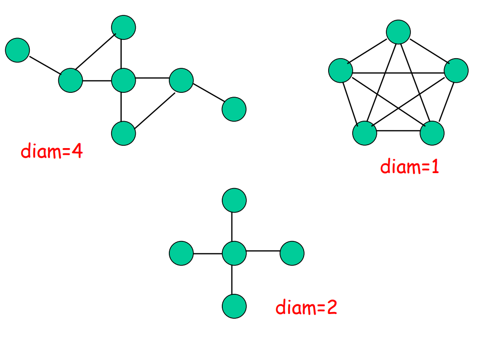
Grafo di Petersen
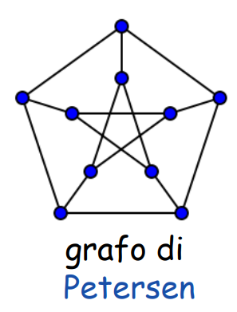
- percorribile ogni nodo in 2, quindi
- ha un ciclo interno e un ciclo esterno, la stella e il pentagono
- tutti vertici hanno grado 3
grafo estremale di Hoffman
- di diametro 2 e grado 7 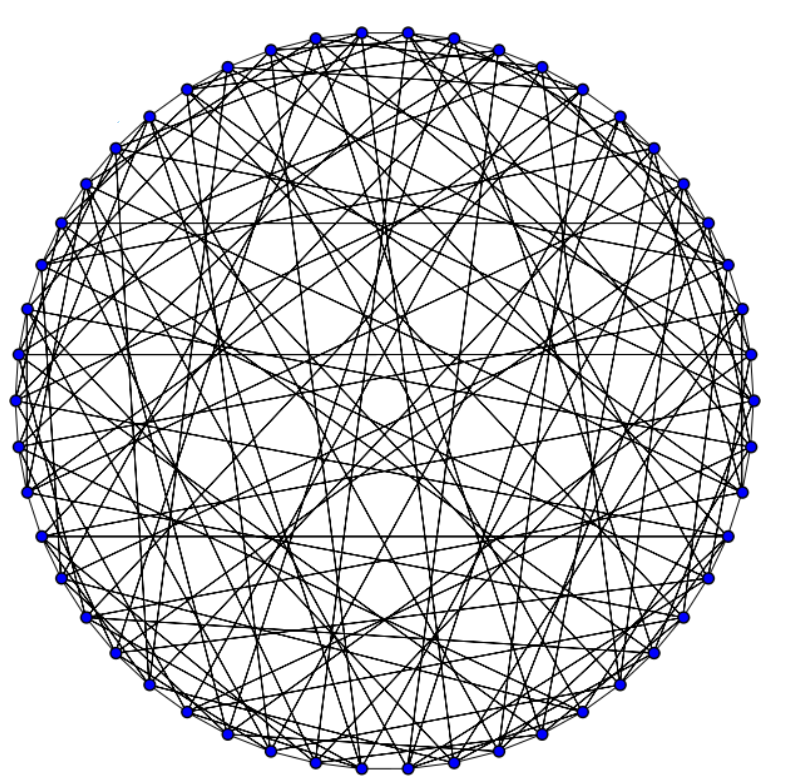
Grafo pesato
mettere dei pesi o costi sui grafi il cammino più corto si calcola sommando i pesi 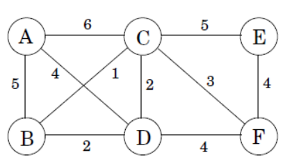 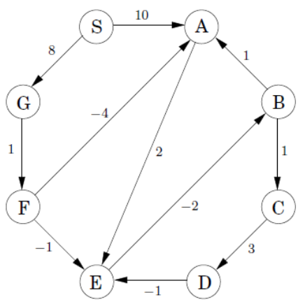
Quanti archi può avere un grafo con n nodi
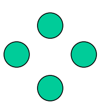 uno totalmente sconnesso ha 0 archi 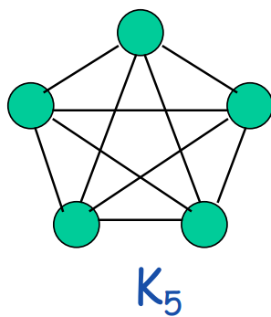 uno completo ha m=|E|=
- indicato con un grafo semplice può avere da a
grafo connesso ma con numero minimo di archi
- non esistono nodi lasciati da soli
- archi
- aciclico non ha ciclo perché non ritorno su quel nodo
- libero
- radicato 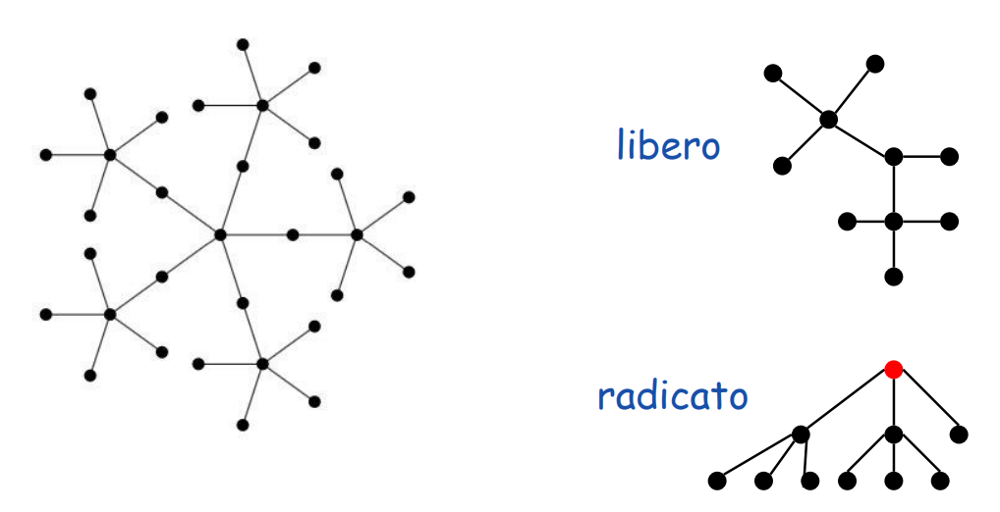
Come dimostriamo che è n-1 ? induzione
caso base: il grafo ha un solo vertice 0 archi → caso induttivo: nel caso in cui abbiamo un grafo con n nodi aciclico e connesso
- deve avere almeno una foglia
- rimuovendo questa foglia avremmo nodi e archi per l’ipotesi induttiva
quindi T ha ancora n-1 archi
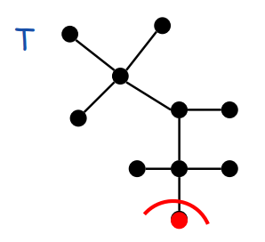
ESERCIZIO PER VEDERE DEFINIZIONI ALTERNATIVE
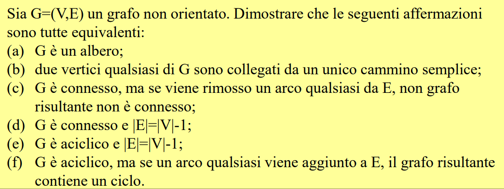 importante, se abbiamo un grafo G connesso deve avere almeno archi e al più archi oppure
non è detto che se un grafo ha n-1 archi sia connesso
Come si risolve la cosa dei 7 pontos?
ciclo si dice euleriano se puoi attraversare tutti gli archi di solo una volta
- quando un grafo ammette un ciclo euleriano? ⇐> tutti i nodi hanno grado pari ammette invece un cammino euleriano se tutti i nodi hanno grado pari tranne nodi questo pontos non si può fare 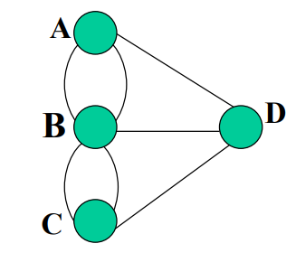
Pk i grafi?
utilizzato per reti stradali nodi=incroci archi=strade per voli aerei nodi= aereoporti archi= rotte aeree per la metro nodi=fermate archi=tratte metro
ecco esempi grafici
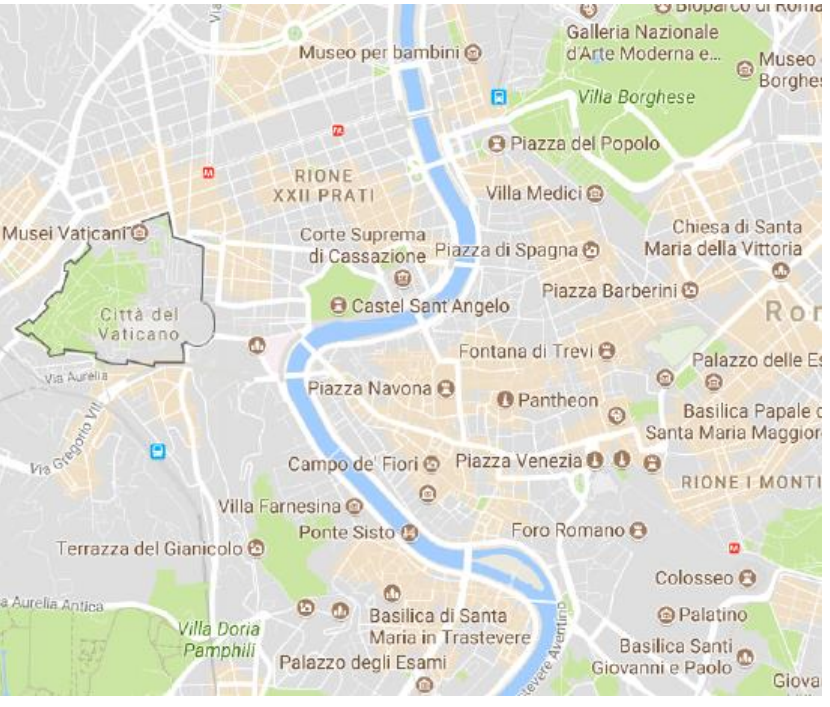 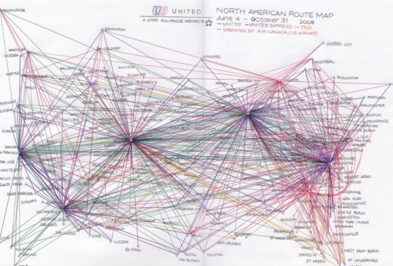 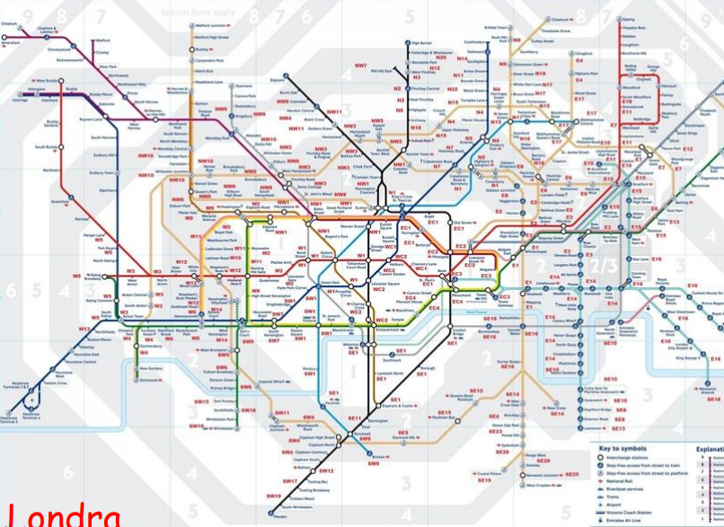
PERCORSO PROFESSOR PASQUALE
Il professor pasquale voleva da centocelle arrivare alla pallalottomatica in breve tempo il navigatore suggerisce il percorso migliore prendendo pesi degli archi come
- la lunghezza(strada più breve)
- tempo di percorrenza(strada più veloce) 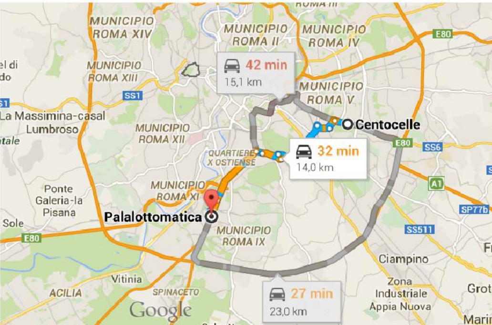
Reti sociali
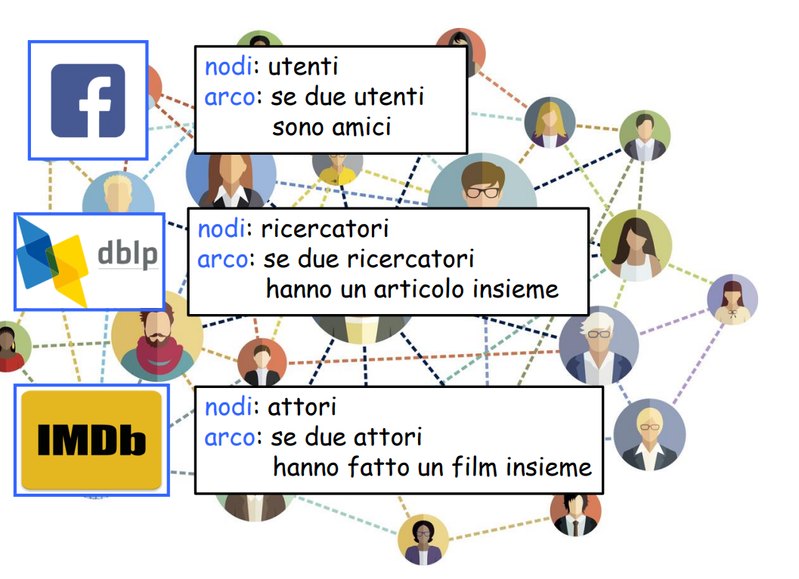
Kevin Bacon ha mille collegamenti impossibile incredibile
Reti delle dipendenze
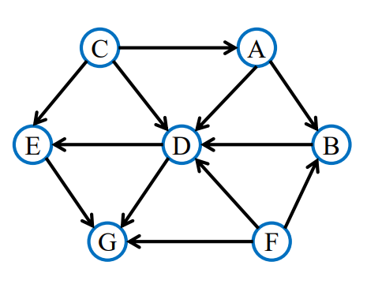 ci sono nodi che hanno compiti da svolgere l’arco indica che u deve essere eseguito prima di v, in termini di compiti
- esami a propedeuticita
- moduli software di un progetto a dipendenze
Ordinamento topologico del grafo, mettendo le dipendenze da sx a dx 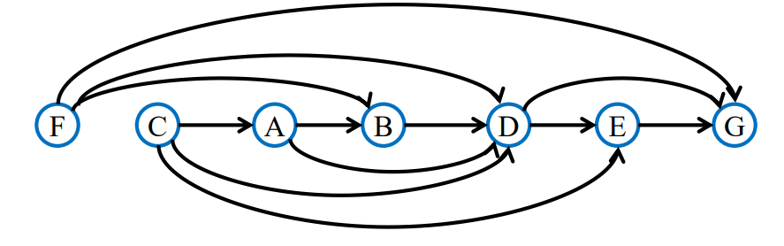 nodi: compiti da svolgere archi u,v rappresentano conflitti date esami e vincoli certi esami non possono essere svolti lo stesso giorno vedere poi il problema alle ultime slide
Numero cromatico
Per colorazione si intende “colorare” i nodi del grafo usando il minimo numero di colori evitando di mettere colori simili adiacenti. 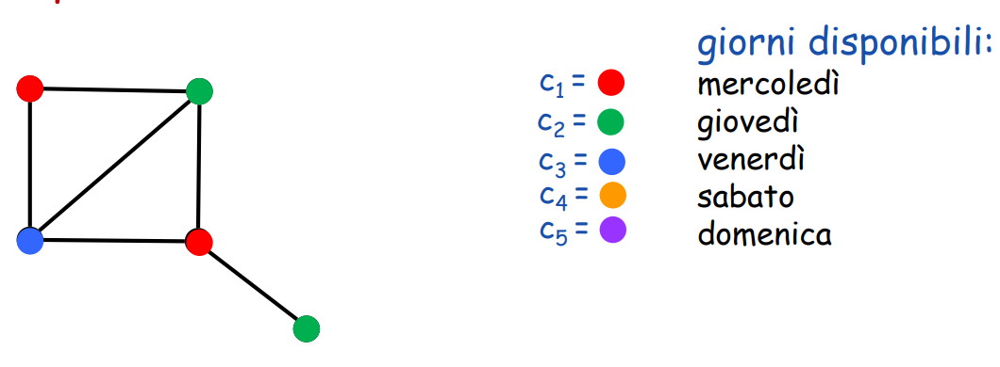
ESERCIZIO
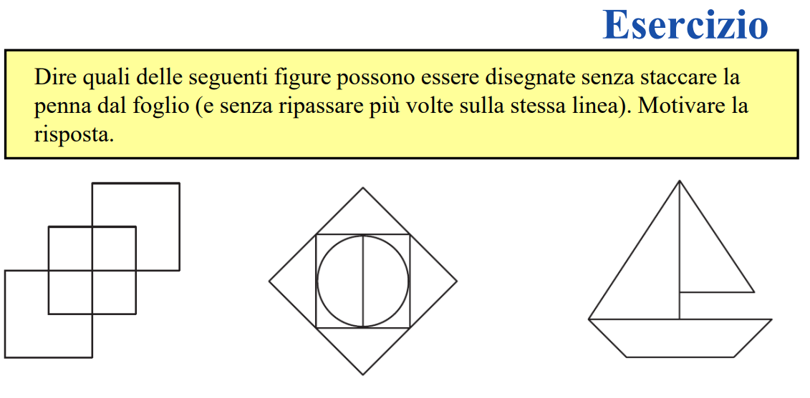